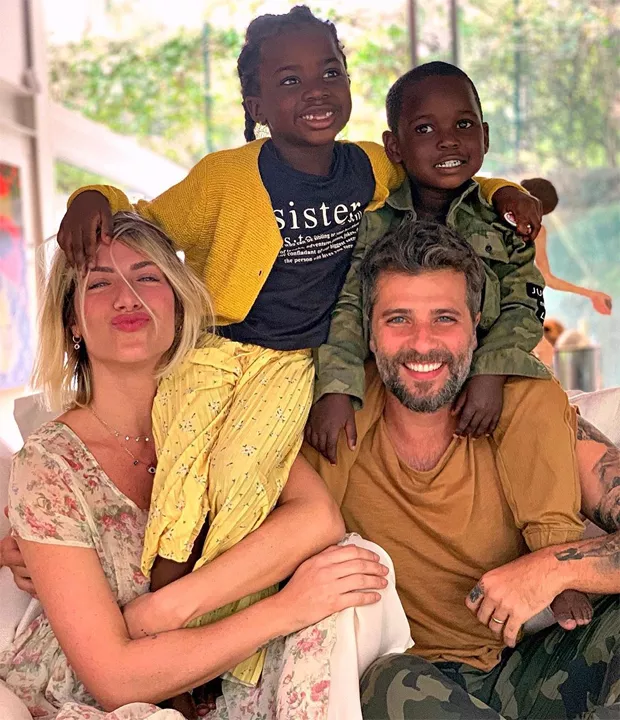

Direito à educação, à cultura, ao esporte e ao lazer
Segundo o art. 53, da Lei 8069/90, “a criança e o adolescente têm direito à educação,
visando ao pleno desenvolvimento de sua pessoa, preparo para o exercício da cidadania e
'' qualificação para o trabalho […]”.
Polícia investiga escola infantil por maus-tratos de alunos em SP; vídeo mostra crianças chorando e presas com 'camisa de força' no banheiro
à convivência familiar e comunitária
Segundo o art. 19, da Lei 8069/90, “é direito da criança e do adolescente ser criado e educado no seio de sua família e
, excepcionalmente, em família substituta, assegurada a convivência familiar e comunitária,
em ambiente que garanta seu desenvolvimento integral.” .
Inscrições abertas para curso de apadrinhamento afetivo de crianças e adolescentes acolhidos
Direito à vida e à saúde
Segundo o art. 7º, da Lei 8069/90, “a criança e o adolescente têm direito a proteção à vida e à saúde,
mediante a efetivação de políticas sociais públicas que permitam o nascimento e o desenvolvimento sadio e harmonioso,
em condições dignas de existência.”.
Bebê de 1 ano morre após atendimento em unidades de saúde na BA e família alega negligência médica
Art.15 A criança e o adolescente têm direito à liberdade, ao respeito e à dignidade
Segundo o art. 15, da Lei 8069/90, “a criança e o adolescente têm direito à liberdade, ao respeito e à dignidade como pessoas humanas em processo de
desenvolvimento e como sujeitos de direitos civis, humanos e sociais garantidos na Constituição e nas leis.”.
Tortura: Família que manteve criança acorrentada em barril é condenada
Direito à profissionalização e à proteção ao trabalho
Segundo o art. 69, da Lei 8069/90, o adolescente tem direito à profissionalização e
à proteção no trabalho, observados os seguintes aspectos, entre outros: i) respeito à
condição peculiar de pessoa em desenvolvimento; ii) capacitação profissional adequada ao mercado de trabalho.
O trabalho infantil no tráfico de drogas e a punição das vítimas
Proteção sexual
A lei estabelece quais são as violações sexuais contra crianças e adolescentes, que não podem ser envolvidos em cenas pornográficas ou de sexo explícito, com penas de prisão para os responsáveis pelo conteúdo de teor sexual.
250 mil crianças obrigadas a prostituir-se
Art. 33. A guarda obriga a prestação de assistência material, moral e educacional à criança ou adolescente, conferindo a seu detentor o direito de
opor-se a terceiros, inclusive aos pais.
§ 1º A guarda destina-se a regularizar a posse de fato, podendo ser deferida,
liminar ou incidentalmente, nos procedimentos de tutela e adoção, exceto
no de adoção por estrangeiros.
§ 2º Excepcionalmente, deferir-se-á a guarda, fora dos casos de tutela e adoção, para atender a situações peculiares ou suprir a falta eventual dos pais
ou responsável, podendo ser deferido o direito de representação para a prática de atos determinados.
§ 3º A guarda confere à criança ou adolescente a condição de dependente,
para todos os fins e efeitos de direito, inclusive previdenciários.
§ 4º Salvo expressa e fundamentada determinação em contrário, da autoridade judiciária competente, ou quando a medida for aplicada em preparação para adoção, o deferimento da guarda de criança ou adolescente a terceiros não impede o exercício do direito de visitas pelos pais, assim como o
dever de prestar alimentos, que serão objeto de regulamentação específica,
a pedido do interessado ou do Ministério Público.
Família de menino achado no Centro será acompanhada pela assistência social
Art. 41. A adoção atribui a condição de filho ao adotado, com os mesmos
direitos e deveres, inclusive sucessórios, desligando-o de qualquer vínculo
com pais e parentes, salvo os impedimentos matrimoniais.
§ 1º Se um dos cônjuges ou concubinos adota o filho do outro, mantêm-se
os vínculos de filiação entre o adotado e o cônjuge ou concubino do adotante e os respectivos parentes.
§ 2º É recíproco o direito sucessório entre o adotado, seus descendentes, o
adotante, seus ascendentes, descendentes e colaterais até o 4º grau, observada a ordem de vocação hereditária.
Haitiano arrecada dinheiro para adotar menino abandonado no lixo

Art. 42. Podem adotar os maiores de dezoito anos, independentemente
do estado civil.
§ 1º Não podem adotar os ascendentes e os irmãos do adotando.
§ 2º Para adoção conjunta, é indispensável que os adotantes sejam casados
civilmente ou mantenham união estável, comprovada a estabilidade da família.
§ 3º O adotante há de ser, pelo menos, dezesseis anos mais velho do que o
adotando.
§ 4º Os divorciados, os judicialmente separados e os ex-companheiros podem adotar conjuntamente, contanto que acordem sobre a guarda e o regime de visitas e desde que o estágio de convivência tenha sido iniciado na
constância do período de convivência e que seja comprovada a existência
de vínculos de afinidade e afetividade com aquele não detentor da guarda,
que justifiquem a excepcionalidade da concessão.
§ 5º Nos casos do § 4º deste artigo, desde que demonstrado efetivo benefício ao adotando, será assegurada a guarda compartilhada, conforme previsto no art. 1.584 da Lei nº 10.406, de 10 de janeiro de 2002 (Código Civil). 32§ 6º A adoção poderá ser deferida ao adotante que, após inequívoca manifestação de vontade, vier a falecer no curso do procedimento, antes de
prolatada a sentença.
Conheça os tipos de adoção permitidos pela legislação brasileira
Art. 60. É proibido qualquer trabalho a menores de quatorze anos de idade, salvo na condição de aprendiz.
TRABALHO DO MENOR - O QUE PODE E O QUE NÃO PODE?